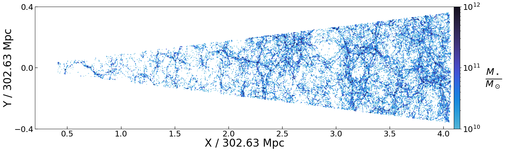
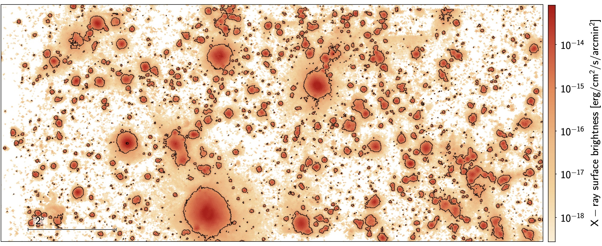

TNG300 X-ray Lightcone, LC-TNGX
LC-TNGX is made available here. Here, we give some key details and expand on the data structure of the public TNG300-based X-ray lightcone.
We use the IllustrisTNG cosmological hydrodynamical simulation with the box of side length \(302.6\) Mpc (TNG300) to construct a lightcone. The lightcone is described in detail in Shreeram et al. 2025a: Quantifying Observational Projection Effects with a Simulation-Based Hot CGM Model; particularly see Sec. 2.

Figure 1 from Shreeram et al. 2025a, which is an illustration of the lightcone built using TNG300 in the x − y plane.Lightcone Construction
LC-TNGX models the hot gas emission in X-rays in the redshift range \(0.03 \lesssim z \lesssim 0.3\), to mock observations in the local Universe. The code used to generate the lightcone is also publicly available: LightGen.

Figure 2 from Shreeram et al. 2025a, showing the projected rest-frame X-ray events from the TNG300 ligthcone in the 0.5−2.0 keV band.We box remap all snapshots into a configuration where the most extended length of one of the sides is approximately four times the original length (Carlson & White 2010; see also this website). This technique ensures that the new elongated box has a one-to-one remapping, remains volume-preserving, and preserves local structures. For a box whose original dimensions are normalized to \((1,1,1)\), the unique solution for the transformed box sides is \((4.1231, 0.7276, 0.3333)\). We remap the coordinates of the gas cells, dark matter particles, and the halo and subhalo catalogues.
Directory & File Descriptions
There are 22 snapshots within the observationally motivated redshift range \(0.03 \leq z \leq 0.3\). Therefore, the data within the LC-TNGX directories is structured into 22 snapshot directories. E.g., snapdir_XX, where XX goes from 78-96 (\(0.03 \leq z \leq 0.3\) ). Each snapshot of the lightcone is further divided into subshells (or bins). Snapshot numbering matches the standard IllustrisTNG convention.
GasProperties/
Contains properties of gas cells throughout the lightcone. These files describe the thermodynamic and physical properties of the gas contributing to the lightcone.
Halo and subhalo catalogs
The below two files represent the halo (central galaxies) and subhalo (satellite galaxies) catalog. The quantities are all taken from the original TNG snapshots.
central_halo_properties_all_snaps.fits
Merged halo catalogue containing all central halos across lightcone snapshots.
| Column | Units | Description |
|---|---|---|
Halo_ID |
– | Halo ID (count starts from 0). |
flag_mass |
– | Cases exist where SUBFIND does not define a mass for the halo; these cases are flagged with False. |
RA |
deg | Right Ascension (J2000). |
DEC |
deg | Declination (J2000). |
M500c |
1e10 M☉ | Total mass enclosed in a sphere whose mean density is 500× the critical density of the Universe. |
M200c |
1e10 M☉ | Total mass enclosed in a sphere whose mean density is 200× the critical density of the Universe. |
M200m |
1e10 M☉ | Total mass enclosed in a sphere whose mean density is 200× the mean matter density of the Universe. |
R200c |
ckpc | Comoving radius of a sphere centered at (X_halo, Y_halo, Z_halo) whose mean density is 200× the critical density. |
R200m |
ckpc | Comoving radius of a sphere centered at (X_halo, Y_halo, Z_halo) whose mean density is 200× the mean matter density. |
R500c |
ckpc | Comoving radius of a sphere centered at (X_halo, Y_halo, Z_halo) whose mean density is 500× the critical density. |
R200c_deg |
deg | Angular size corresponding to R200c, computed using astropy's arcsec_per_kpc_comoving(redshift). |
D_c |
ckpc | Comoving distance to the group. |
redshift |
– | Redshift of the group within the framework of the lightcone. |
subhalo_ids |
– | ID into the original TNG300-1 Subhalo catalog. |
M_star_in_2xR_star |
1e10 M☉ | Sum of masses of all particles/cells within twice the stellar half-mass radius. |
X_halo |
ckpc | Projected X-coordinate of the group. |
Y_halo |
ckpc | Projected Y-coordinate of the group. |
Z_halo |
ckpc | Projected Z-coordinate of the group. |
N_gal |
– | Total number of groups in this halo catalog. |
ARF |
cm2 | Effective collecting area defined for generation of events with pyxsim. |
sat_subhalo_properties_all_snaps.fits
Merged subhalo catalogue containing all satellite subhalos across lightcone snapshots. Definitions follow those of the central halo catalogue; here all entries correspond to satellites.
| Column | Units | Description |
|---|---|---|
Subhalo_ID |
– | Subhalo ID (count starts from 0). |
flag_mass |
– | Cases where SUBFIND does not define a mass are flagged with False. |
Parent_ID |
– | ID of the parent distinct halo (Halo_ID). |
RA |
deg | Right Ascension (J2000). |
DEC |
deg | Declination (J2000). |
M_star_in_2xR_star |
1e10 M☉ | Sum of masses of all particles/cells within twice the stellar half-mass radius. |
Cen_M_star_in_2xR_star |
1e10 M☉ | Stellar mass of the corresponding central halo, defined within twice the stellar half-mass radius. |
subhalo_sfr |
M☉ yr-1 | Star formation rate of the subhalo. |
stellar_metallicity |
– | Stellar metallicity of the subhalo. |
subhalo_radius |
ckpc | Comoving radius of the subhalo. |
subhalo_radius_deg |
deg | Angular size corresponding to subhalo_radius. |
D_c |
ckpc | Comoving distance to the subhalo. |
redshift |
– | Redshift of the subhalo within the framework of the lightcone. |
M500c |
1e10 M☉ | Parent halo mass enclosed within 500× the critical density. |
M200m |
1e10 M☉ | Parent halo mass enclosed within 200× the mean matter density. |
R200c |
ckpc | Comoving radius of the parent halo defined at 200× the critical density. |
R200m |
ckpc | Comoving radius of the parent halo defined at 200× the mean matter density. |
R500c |
ckpc | Comoving radius of the parent halo defined at 500× the critical density. |
R200c_deg |
deg | Angular size corresponding to R200c. |
X_subhalo |
ckpc | Projected X-coordinate of the subhalo. Warning: do not use for cross-matching with X-ray events. Use the RA, Dec., los for cross-matching on the sky. |
Y_subhalo |
ckpc | Projected Y-coordinate of the subhalo. Warning: do not use for cross-matching with X-ray events. Use the RA, Dec., los for cross-matching on the sky. |
Z_subhalo |
ckpc | Projected Z-coordinate of the subhalo. Warning: do not use for cross-matching with X-ray events. Use the RA, Dec., los for cross-matching on the sky. |
N_gal |
– | Total number of satellite subhalos in this catalogue. |
ARF |
cm2 | Effective collecting area defined for generation of events with pyxsim. |
observer_locations.npy
Defines the possible observer locations for the generated lightcone. This lightcone and all the data products correspond to the base case observer located at (0, 0, 0). Nevertheless, 8 possible observer positions are possible.
snapshot_info.csv
Provides metadata describing the structure of the lightcone. Includes information such as: snapshot boundaries within the lightcone, redshift ranges, etc.
⚠️ Recommended starting point: users are encouraged to inspect this file first to understand the overall layout and organization of the lightcone.
Stacked_data_products_0.50-2.00_keV/
Contains X-ray and gas profiles for every halo in a given stellar mass or halo mass bin within the 0.50–2.00 keV energy band. The mean of these profiles in a given mass bin gives the stacked X-ray profile.